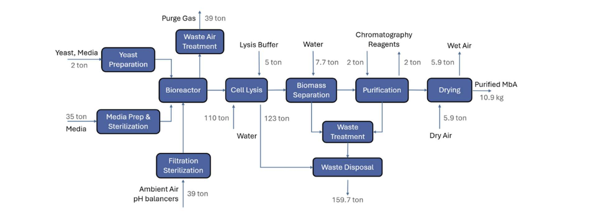
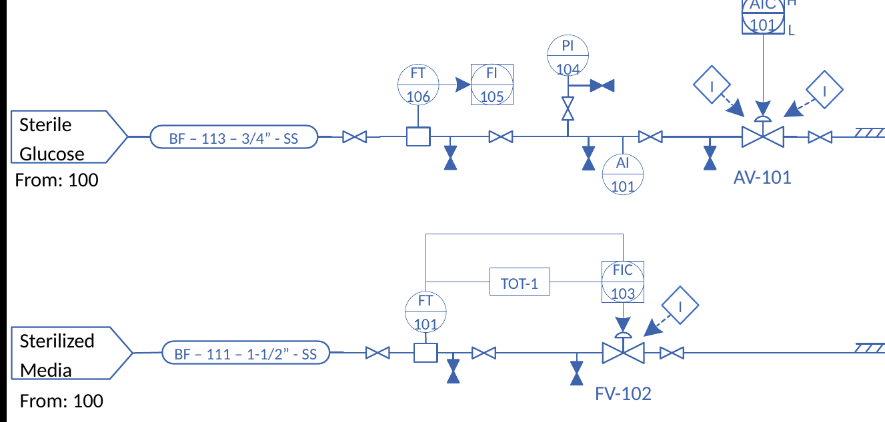
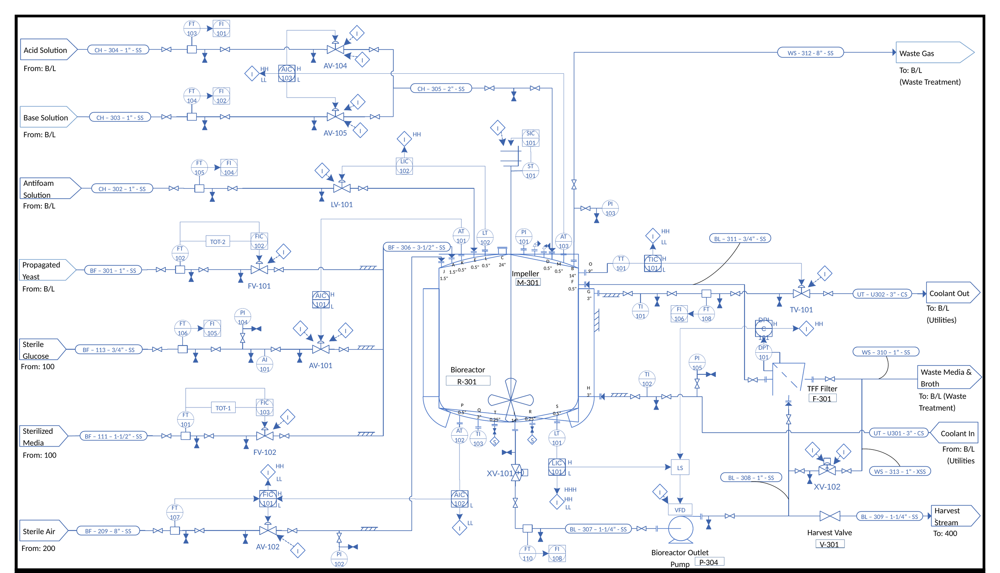
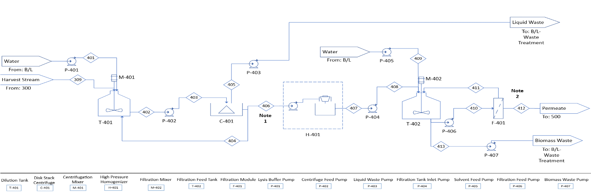

Production-scale design of a plant making Montbretin A (MbA), a potential type 2 diabetes therapeutic, from bioengineered Saccharomyces cerevisiae yeast.
- Program
- UBC Chemical and Biological Engineering capstone
- Sponsor
- UBC Michael Smith Laboratories
- Team
- 7 students
- Role
- Team coordinator · Heat integration · Economics · Biomass separation
- Tools
- Excel
A plant returning a 17% real after-tax IRR on equity against $75.7M of fixed capital, with a heat-exchanger network handling 1.74 MW of duty, about 95% of it recovered internally.
- Team coordinator. The role rotated weekly; after my week the team asked me to keep it for the whole project. I sent agendas ahead, wrote minutes detailed enough that anyone who missed a meeting could catch up, captured professor and sponsor feedback at reviews, and called the in-person work sessions that carried us through both semester deadlines.
- Heat-exchanger network (PFD 100): heat duties, log-mean temperature differences and exchanger areas for media and glucose sterilization.
- P&ID: the sterile media and sterile glucose feed lines into the bioreactor, with their control loops and interlocks.
- Pipe and pump sizing for the plant.
- Economics: built the economic model: capital estimate, operating costs, financed cash flow and IRR.
- Biomass separation (PFD 400): PFD and material balances to complete solid-liquid separation of each 16 m³ fermentation batch within a 12-hour turnaround.
A greenfield plant in Montreal, Quebec. MbA builds up inside the yeast cells, so the biomass is the product stream. The plant runs in six areas:
- Media sterilization (100): one heat-sterilization train serves both the start-up media (about 14 m³ in 2 hours) and the fed-batch glucose feed (about 21 t in 3 hours), each into its own sterile storage tank.
- Air filtration (200): sterile air for the fermenters.
- Fermentation (300): two 20 m³ fed-batch fermenters at 16 m³ working volume, on a 48-hour cycle (36 h fermentation, 2 h emptying, 10 h cleaning).
- Lysis and separation (400): centrifuge cell washing, high-pressure homogenization to release MbA, then filtration.
- Purification (500) and drying (600).
Output: about 11 kg of MbA per batch, 333 batches and roughly 3,700 kg a year, or about 74 million 50 mg doses.


| Media campaign | Glucose campaign | |
|---|---|---|
| HX-101 preheater (heat recovery) | 835.6 kW · 196.2 m² | 824.8 kW · 193.7 m² |
| HX-102 steam heater | 41.8 kW · 0.16 m² | 41.2 kW · 0.16 m² |
- Heat recovery: the hot sterilized stream preheats the incoming feed, so steam supplies only the last 5 °C (83 kW of the 1.74 MW) and cooling back to 30 °C needs no cooling water.
- Tight approach: both ends of the preheater sit 5 °C apart, which makes it large (about 196 m²) and requires counter-current flow: the cold side leaves at 125 °C while the hot side leaves at 30 °C.
- Staying liquid: P-101 raises the feed to 6 atm, well above the ~2.7 bar at which water boils at 130 °C.
- Shell-and-tube exchangers in 316L stainless steel. The two campaigns never run at once, so the network carries about 0.88 MW at any time.

Control narratives
From the design report.
| Description | The volume of sterilized media added to the bioreactor R-301 at the beginning of the batch process is controlled by FIC-103 and FV-102. |
|---|---|
| Control loop | The volume of sterilized media added to R-301 is controlled by the control loop FIC-103/FV-102. The flow rate of sterilized media into R-301 is measured by FT-101. The output of FT-101 is sent to the totalizer TOT-1, which tracks the total volume of sterilized media added to R-301. The output of TOT-1 is sent to the flow indicating controller FIC-103, whose output controls the flow valve FV-102, which modulates the flow of sterilized media into R-301. |
| Alarms | N/A |
| Trips | N/A |
| Description | The concentration of glucose in the bioreactor R-301 after the batch fermentation is controlled by the addition of a concentrated aqueous glucose solution. The addition of this solution is controlled by AIC-101 and AV-101. |
|---|---|
| Control loop | The concentration of glucose in R-301 is controlled by the control loop AIC-101/AV-101. The current glucose concentration is read by the analyzer transmitter AT-101. The output of AT-101 is sent to the analyzer indicating controller AIC-101. The output of AIC-101 controls the valve AV-101, which dictates the flow of concentrated aqueous glucose into R-301. |
| Alarms | High (SGAH-101) and low (SGAL-101) alarms alert operators when the glucose concentration in R-301 is in danger of leaving the process specification. |
| Trips | N/A |
Both feed valves fail closed: on a utility failure, nothing of uncertain sterility reaches the fermenter. Each line has block valves either side of the instruments and drain valves for maintenance.
How to read the drawing
Line designation
BF-111-1½"-SS = service, line number, line size, material of construction.
- BF
- Biologic feed
- BL
- Biologic service / biomass containing
- CH
- Chemical solution
- UT
- Utility service
- WS
- Waste service
- SS / CS
- Stainless steel / carbon steel
Instrument tags in my section
- FT
- Flow transmitter
- FI
- Flow indicator
- FIC
- Flow indicating controller
- TOT
- Totalizer
- AT / AI
- Analyzer transmitter / indicator (glucose concentration)
- AIC
- Analyzer indicating controller
- PI
- Pressure indicator
- FV / AV
- Control valves for the flow and analyzer loops
Symbols
- Circle
- Locally mounted instrument
- Circle in a square
- Remote control system (e.g. DCS)
- Diamond with I
- Interlock
- H / L / HH / LL
- High, low, high-high and low-low alarm or interlock
- Open / filled bow-tie
- Isolation valve open / closed
- Hatched line
- Insulation

- On R-301, each transmitter drawn represents five installed transmitters.
- Every controller has a redundant controller installed.
- A safety instrumented system (SIS) is implemented where required for safety functions.

I built the plant's economic model, from equipment costs through capital, operating cost, revenue and financed cash flow to profitability, to inform the final go/no-go decision.
The model in our final presentation showed the first design falling short of our 12% minimum return. After that feedback I reworked it for the final report: fill-and-finish moved to a contract facility, MbA sold in bulk at $0.85 per dose instead of $1.00, and the loan spread over 20 years instead of 10, matching the plant life and easing early cash flow. The revised plant reached a 17% real IRR.
| Delivered equipment cost | $9.9M |
| Fixed capital investment | $75.7M |
| Total capital investment (incl. working capital) | $86.8M |
| Revenue ($0.85 per 50 mg dose) | $63.1M / yr |
| Operating cost | $48.1M / yr |
| IRR on equity, after tax: nominal / real | 21.7% / 17.0% |
| Net present worth (12.9% after-tax MARR) | $27.9M |
| Benefit–cost ratio | 1.84 |
Without the debt, the project IRR is 10.0% real (14.4% nominal).
How the model was built
Basis
- Location: Montreal, Quebec, a Canadian bioprocess hub with industrial-scale infrastructure. Canada's stricter pharmaceutical regulation means product made there can be sold across North America.
- Schedule: 2-year build, 20-year plant life, 7,992 operating hours a year (allowing for holidays, maintenance and shutdowns). A 48-hour cycle (36 h fermentation, 12 h turnaround) on two fermenters gives 333 batches a year.
Capital: $86.8M
- Equipment, $9.9M delivered: each unit sized from the PFDs (flow, capacity, material, duty and power), priced from manufacturers where possible and from a cost database otherwise. The fermenters and their agitators were about 61% of the total.
- Factored estimate: 50% added to equipment for clean-in-place systems ($14.8M basis), then Peters, Timmerhaus and West's solid–fluid ratios: installation 39%, instrumentation and controls 26%, piping 31%, electrical 10%, buildings 29%, yard 12%, service facilities 55%, engineering 32%, construction 34%, contractor's fee 23% and contingency 37% of equipment.
- Priced separately: land ($11.4M, scaled to a 57,000 ft² site in Montreal) and the sterile-water system ($0.8M). Direct costs $57.0M, fixed capital $75.7M, working capital $11.1M.
Operating cost: $48.1M a year
- Direct production, $22.6M: raw materials $2.0M (glucose about $540K; purification buffers, mostly acetonitrile, about $700K), utilities about $6.2M (96% electricity, at $0.117/kWh) and operating labour $4.05M.
- Operating labour: the Alkhayat–Gerrard correlation, NOL = (6.29 + 31.7P² + 0.23Nnp)0.5, with P = 3 solids-handling steps and Nnp = 8 other units, gives 17.1, so 18 operators per shift. At 4.5 operators per position for round-the-clock operation and $50,000 each: $4.05M.
- Fixed charges, $14.7M (depreciation, property tax, insurance, plant overhead) and general expenses, $10.8M (administration, sales and marketing, R&D).
Revenue: $63.1M a year
- 11.14 kg of MbA per batch × 333 batches = 3,711 kg a year = 74.2 million 50 mg doses at $0.85.
- Why $0.85: the sponsor's targets were at most $1 per pill at retail, a 50 mg dose and 100,000 kg a year. With no titer data, the design relied on literature values, which supported about 3,700 kg a year. On thin margins, selling powder in bulk to a fill-and-finish partner (who sells pills at $1) carried less risk and cost than packaging pills in-house.
Cash flow and profitability
- Financing: 30% equity; 70% debt ($60.8M) at 12% compounded monthly over 20 years, $669,137 a month.
- Depreciation: Canadian capital cost allowance by asset class: building class 6 (10%, half-year rule), equipment class 53 (50%) and electronics class 50 (55%), where the accelerated investment incentive waives the half-year rule.
- Taxes and inflation: 26.5% corporate tax and 4% inflation; sales and operating costs start in year 2, after the build.
- Profitability: net present worth and IRR rather than payback or simple return, because they account for the time value of money. NPW at the 12.9% after-tax MARR (13% real, 17.5% with inflation) measures the value created; IRR gives the return as a percentage. Each covers the other's blind spots.
Design
- Leak direction in HX-101: the sterile side runs about 2 atm below the unsterile side, so a tube leak would contaminate the sterile stream. Because the sterile side is downstream of the raw side in the same line, a valve alone can't reverse that. I'd move the main pump to after HX-101's cold side, keeping the raw side at about 3 atm (enough to stop it boiling at 125 °C), so the sterilized media returns at higher pressure, held there by a back-pressure valve.
- Safety layer: add an independent high-high level trip on each fermenter, with its own sensor and shutoff, separate from the feed control loops.
Economics
- Sensitivity analysis: we varied only selling price and capital. I'd test the least certain inputs first, starting with titer (0.8 to 1.2 g/L would mean 50% more MbA from the same inputs), and run a Monte Carlo analysis instead of one variable at a time.
- Estimate quality: about 80% of the equipment cost came from database estimates rather than quotes, and the fermenter agitators alone were 41% of it. That's normal for a preliminary estimate, but they're the first numbers I'd firm up.
- Overhead and cleaning: plant overhead was taken as 10% of manufacturing cost ($3.6M), where the textbook basis (50–70% of labour, supervision and maintenance) gives $4.2–5.9M. The clean-in-place operating cost had no data behind it.
- Chiller efficiency: reviewing the model after the project, I found the chiller's coefficient of performance set at 1.5. Water-cooled screw chillers above about 1,160 kW run at 4.6 or better. Correcting it cuts chiller power from 1,926 kW to 628 kW and the utility bill from about $5.9M to $1.9M a year, a 67% reduction.
- Depreciation: the first schedule front-loaded building depreciation (no half-year rule) and used 50% instead of 55% for electronics. Getting the timing right moves deductions into the years that actually pay tax.
What I'd carry forward
- Recurring costs can outweigh capital: $48M a year to run against $87M once to build.
- Trace every major cost back to something physical (a flow rate, a capacity, operating hours) instead of accepting a number because the spreadsheet formula works.
- Question constraints early. The price cap and the missing titer data shaped the outcome more than any equipment choice.
Course design project. Figures are from the team's design report, stream tables and economic model.